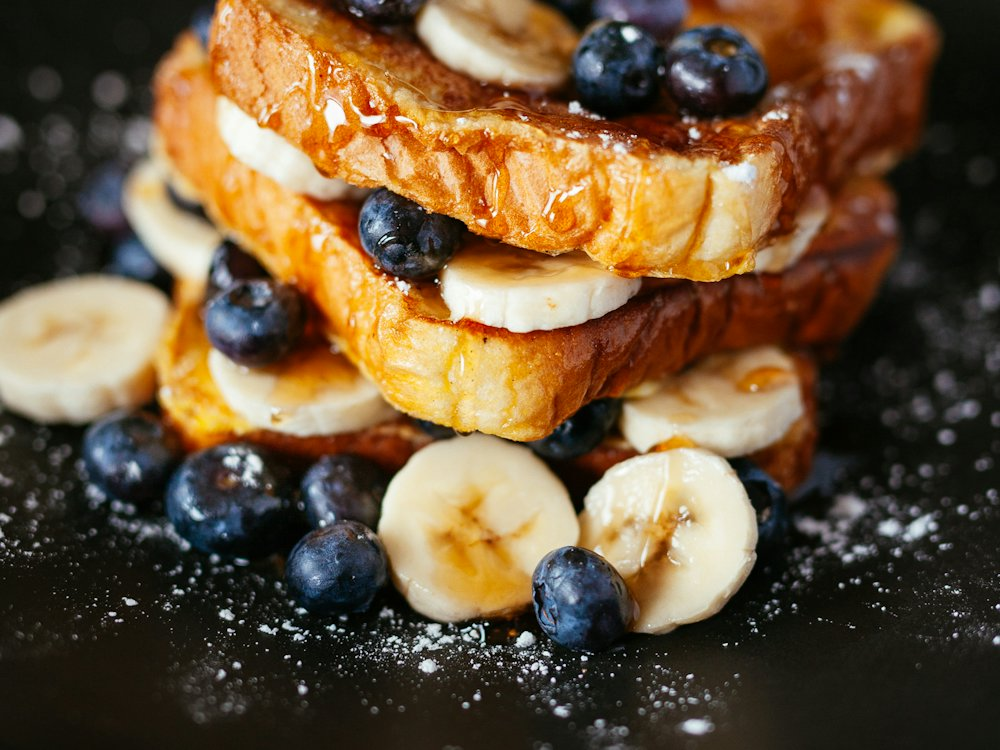

Medovic
Кафе · Завтраки, десерты · Алматы
Рейтинг 2ГИС
★ 4.7
2 529 оценок
Год открытия
2021
работает не позднее мая 2021 г. (weproject.media)
Средний чек
5 000 ₸
по данным 2ГИС
Адрес и часы
📍 пр. Абая, 35/37, Алматы · Бостандыкский район
🕒 часы работы уточняются — смотрите в 2ГИС
О заведении
Завтраки, ремесленный хлеб и десерты.
Меню
Рядом в справочнике
Master Coffee · May bistro · Medeu Visit Center · Megafish · MegAta Doner · Miterra lounge